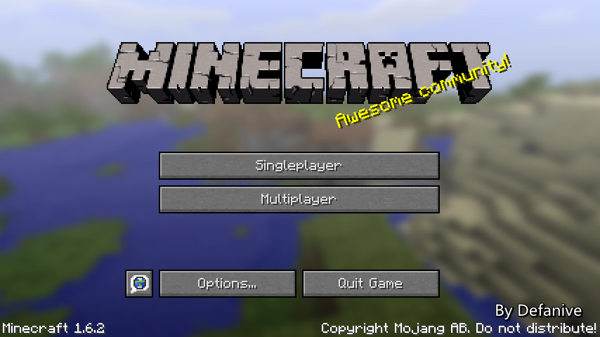
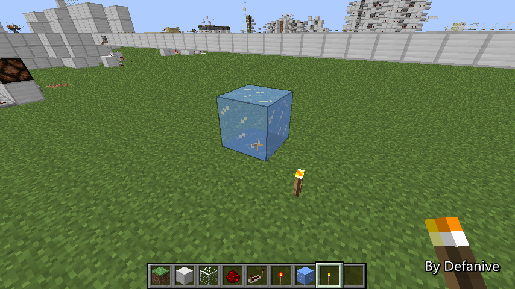
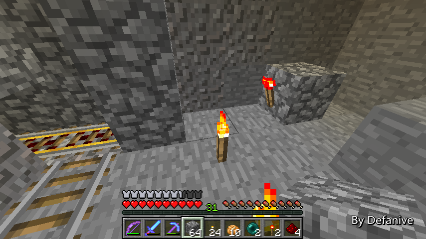
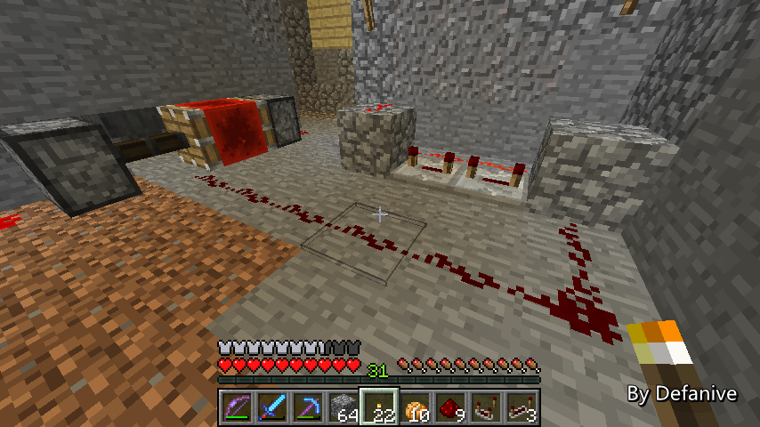
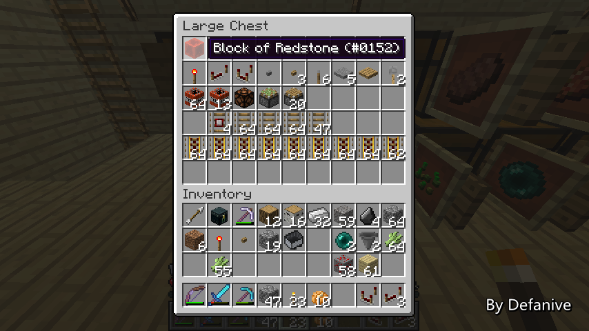

首页
上一页
255
256
257
258
259
260
260
261
262
263
264
265
下一页
末页
defanive2
无尽黑夜
14
最后全部铺上红石之后
下面的活塞就都成为了BUD
一旦甘蔗长成，就会触发一次信号
立即破坏所有第二节的甘蔗
——来自 MCLive
19432楼
2013-07-26 01:35
defanive2
无尽黑夜
14
刚刚电路出了一点问题，稍微修复了一下
现在放一个甘蔗，可以看到活塞迅速破坏了长出的甘蔗
同时BUD电路也复位
——来自 MCLive
19433楼
2013-07-26 01:40
defanive2
无尽黑夜
14
现在就可以把甘蔗场彻底封闭起来了
非常的美观
——来自 MCLive
19434楼
2013-07-26 01:42
defanive2
无尽黑夜
14
接下来还差收集系统
不过绝大部分已经完成了，只差最后收集而已
现在让矿车行驶一次，应该可以收集到几个甘蔗
——来自 MCLive
19435楼
2013-07-26 01:43
defanive2
无尽黑夜
14
非常顺利
——来自 MCLive
19436楼
2013-07-26 01:45
defanive2
无尽黑夜
14
好吧，今天就直播到这里了
全自动甘蔗场的绝大部分都已经完成了
还差一个控制系统和收集系统
当然不会花费非常多的时间即可完成
下次直播时再继续进行这个工程把！
——来自 MCLive
19438楼
2013-07-26 01:51
defanive2
无尽黑夜
14
PS BUD即时感应收割的好处就是速度非常快
一旦长出之后立刻被收获，于是立即又可以开始生长
——来自 MCLive
19440楼
2013-07-26 01:56
defanive2
无尽黑夜
14
昨晚直播完之后今晚睡觉前再直播一次吧！
刚刚更新了optifine
Awesome Community！
PS MC的game community氛围一直都是大家比较称赞的
相对其他游戏来说非常的赞
尤其是minecraftforum上面，那种氛围是可以感受得到的
——来自 MCLive

19447楼
2013-07-26 11:53
defanive2
无尽黑夜
14
昨天在进行了甘蔗场主体部分的建造
里面的一些细节没有进行细说
设计上用到了一些比较少用的技巧
接下来来创造世界里面讲讲吧
——来自 MCLive
19448楼
2013-07-26 11:56
defanive2
无尽黑夜
14
冰的这个BUG其实已经存在已久了
但是mojang一直都没有修复
个人认为，现在冰在生存里面是比较难获得的材料
需要几率很低的silk touch附魔
而这个BUG又在各种设计上都有很不错的应用
应该就算留着也没有什么问题
PS 其实mojang一直以来的态度就是
如果大家不喜欢的BUG就修掉
如果大家没什么意见或者喜欢的BUG就留着
红石->黑曜石其实也是一个BUG
稍微有点长的故事，以后有时间了慢慢说
——来自 MCLive

19449楼
2013-07-26 11:59
defanive2
无尽黑夜
14
冰如果是手动破坏的话会变成水源，并且立即接受到一个更新
如果是靠光源融化的话，同样也会变成水源
但是这个水源不会收到一个更新
也就可以做到了静态水的作用，非常实用
不过同时也要保证不接受到任何更新
否则水会重新开始流动
——来自 MCLive
19452楼
2013-07-26 12:02
defanive2
无尽黑夜
14
另外一个就是昨天收集系统的漏斗矿车
漏斗矿车在昨天的甘蔗场设计中作为了收集装置
众所周知，漏斗/漏斗矿车可以收集正上方1格的物品
——来自 MCLive
19454楼
2013-07-26 12:03
defanive2
无尽黑夜
14
但是如果有仔细看的话，漏斗矿车实际上是在地板以下运行的
而物品则是掉落在地板以上
那么这个物品是怎么被漏斗矿车收集的呢
——来自 MCLive
19455楼
2013-07-26 12:05
defanive2
无尽黑夜
14
其实问题的关键就在于铁轨上
漏斗矿车的确是只能收集正上方一格的物品
但是由于铁轨有厚度，在铁轨上的矿车实际上被抬高了
因此收集范围也被抬高了一点
于是就到了上一格的范围内
左边和右边分别是在和不在铁轨上的矿车
可以看到比较明显的高度差异
PS 高度差貌似是0.125-0.160之间，没实测出来
铁轨hitbox虽然是0.125高，但是矿车在铁轨上时似乎更高一点
或者说矿车在地面上时会下陷。。？
——来自 MCLive
19457楼
2013-07-26 12:09
defanive2
无尽黑夜
14
因此昨天的整个系统就是这样了
上方的活塞同时作为BUD和破坏的作用
草地下方的铁轨用于收集甘蔗
静态水源保证了不会破坏铁轨
PS 加速和压力铁轨也要注意不要对水源提供更新
——来自 MCLive
19459楼
2013-07-26 12:12
defanive2
无尽黑夜
14
而这个设计最大的优点在于单个甘蔗的占地面积为1
高度上稍微大了一点，8格，总尺寸为1x1x8（包含电路）
并且这种设计的单个单元可以平面内双向堆叠
而很常见的水流收集旧设计，最少也要1x3x3的尺寸（不含电路）
并且还不能平面内双向堆叠，只能单向堆叠
因此对于空间利用率是非常高的
尤其是面积利用率，可以达到最高的80%
而各种旧设计一般都在50%以下
——来自 MCLive
19461楼
2013-07-26 12:18
defanive2
无尽黑夜
14
而BUD电路的设计在1.5更新后就变得非常的强大
任何一个下推的活塞在破坏了甘蔗之后
都会连带的更新所有活塞，一直更新到总的BUD活塞
BUD活塞复位之后同时也复位了所有的下推活塞
——来自 MCLive
19467楼
2013-07-26 12:21
defanive2
无尽黑夜
14
而由于红石信号可以传送15格
因此整个BUD面板的大小可以被设计得非常大
——来自 MCLive
19468楼
2013-07-26 12:23
defanive2
无尽黑夜
14
因此这就是整个甘蔗场的设计了
对这个设计个人觉得非常的满意
比现有的其他设计都好（至少比我见过的其他设计都好）
——来自 MCLive
19470楼
2013-07-26 12:26
defanive2
无尽黑夜
14
当然，有人会说我这个设计只有有silk touch才能用
其实除了用冰->静态水这个方法以外
直接绕开所有水源铺铁轨也是可以的
这是一种绕开水源铺铁轨的路线
不断横向循环即可把所有的非水源面积都覆盖上
这样就可以省去了用冰而且也要防止静态水更新的麻烦
PS 加速铁轨可以放在2个横向的铁轨处
PS PS 但是为什么生存里我使用了冰的设计呢
其实是因为个人比较不喜欢这种绕来绕去的感觉
还是对称、简介的直线铁路漂亮
——来自 MCLive
19471楼
2013-07-26 12:32
defanive2
无尽黑夜
14
现在在生存里面还差一个储存系统
将收集到的甘蔗全部统一储存到一个大箱子里
当然还会增加多几个箱子以提高容量
不过鉴于平常使用钻石制具速度也比较快
因此消耗也会很快
储存不需要做特别大空间
PS 24张纸，也就是24甘蔗，换一个绿宝石
钻石工具一般都在7-10个绿宝石左右，也就是3组甘蔗左右
因此消耗量是比较大的
——来自 MCLive
19472楼
2013-07-26 12:50
defanive2
无尽黑夜
14
好吧刚刚去吃了点东西，回来继续直播
接下来就要把收集系统继续完成
矿车必须要在物品消失之前收集到物品
也就是说收集间隔要在5分钟之内
那么我们需要一个长脉冲时钟
——来自 MCLive

19479楼
2013-07-26 13:22
defanive2
无尽黑夜
14
长脉冲电路可以使用之前介绍过的公倍数电路
在这里我使用了etho设计的漏斗电路
耗资稍微少一点
——来自 MCLive
19482楼
2013-07-26 13:29
defanive2
无尽黑夜
14
长脉冲电路之后连接到一个脉冲缩短器
这个长脉冲电路会每3分43秒左右发出一次短信号
让漏斗矿车出发收集掉落的甘蔗
——来自 MCLive

19484楼
2013-07-26 13:35
defanive2
无尽黑夜
14
最近的红石工程都把红石储备用完了
来上一点红石矿挖红石用
——来自 MCLive

19486楼
2013-07-26 13:39
defanive2
无尽黑夜
14
fortuneIII开挖！
——来自 MCLive
19487楼
2013-07-26 13:39
defanive2
无尽黑夜
14
58个红石矿都挖完之后，收获5组多的红石
爽快！
——来自 MCLive
19488楼
2013-07-26 13:41
defanive2
无尽黑夜
14
然后做一个系统把全部的甘蔗运送到收集的箱子里
转角处会从hopper交向dropper进行运输
使用dropper运输的最大好处在于耗资低
——来自 MCLive
19489楼
2013-07-26 13:51
defanive2
无尽黑夜
14
转角处做这样一个交换的系统
hopper的好处在于会自动运输物品
而dropper则必须每个物品都受到一个信号
由于hopper是每4tick处理1个物品
那么就需要一个4tick以下的信号
如此可以做成每当dropper收到一个物品时就开始传输
——来自 MCLive
19490楼
2013-07-26 13:54
defanive2
无尽黑夜
14
于是信号也可以继续交往以后的dropper队列
把全部物品往前输送一格
——来自 MCLive
19491楼
2013-07-26 13:54
首页
上一页
255
256
257
258
259
260
260
261
262
263
264
265
下一页
末页